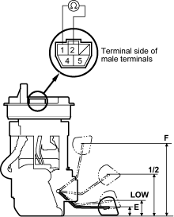

- Check that the pointer of the fuel gauge indicates ''F''.
- If the pointer of the fuel gauge does not indicate ''F'', replace the gauge.
- If the gauge is OK, inspect the fuel gauge sending unit.
NOTE: The pointer of the fuel gauge returns to the bottom of the gauge dial when the ignition switch is OFF, regardless of the fuel level.
- Remove the fuel fill cap.
- Disconnect the quick-connect fittings from the fuel pump.
- Using the tool, loosen the fuel tank unit locknut (A).

- Measure the resistance between the No. 1 and No. 2 terminals with the float at E (EMPTY), 1/2 (HALF FULL) and F (FULL) positions.
If you do not get the following readings, replace the fuel gauge sending unit (see page 11-164).
Float Position F ½ LOW E Resistance (ohms) 11 - 13 68.5 - 74.5 114.4 - 126.6 130 - 132
NOTE: Remove the No. 9 BACK UP (7.5A) fuse from the under-hood fuse/relay box for at least 10 seconds after completing troubleshooting otherwise it may take up to 20 minutes for the fuel gauge to indicate the correct fuel level.
